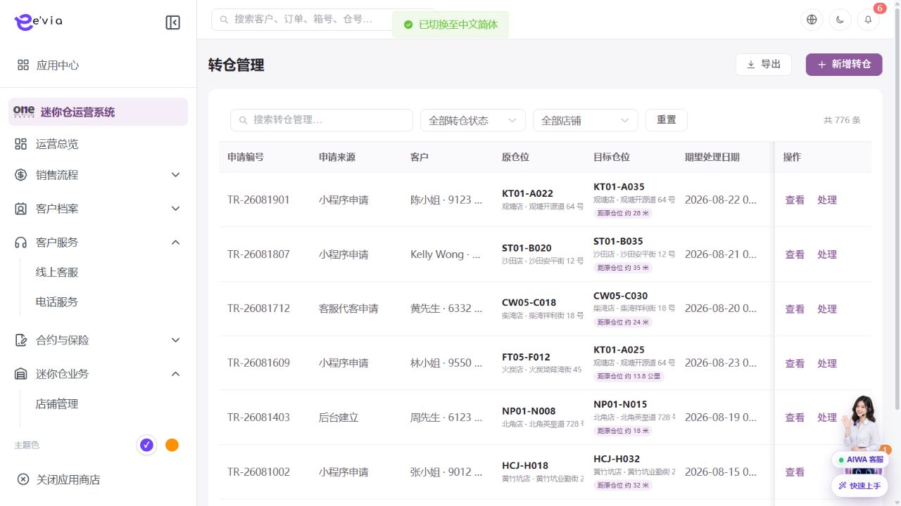
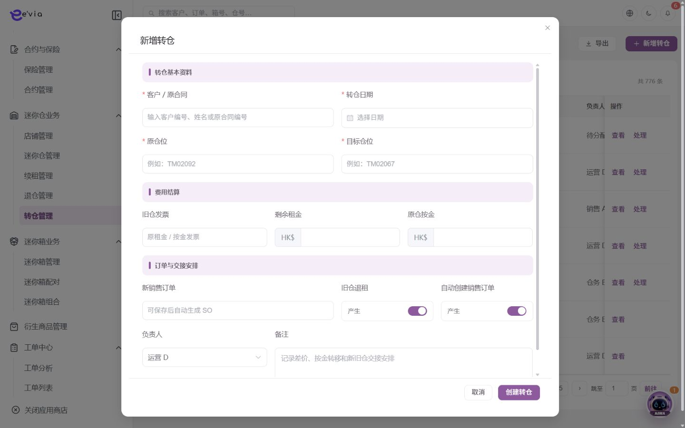
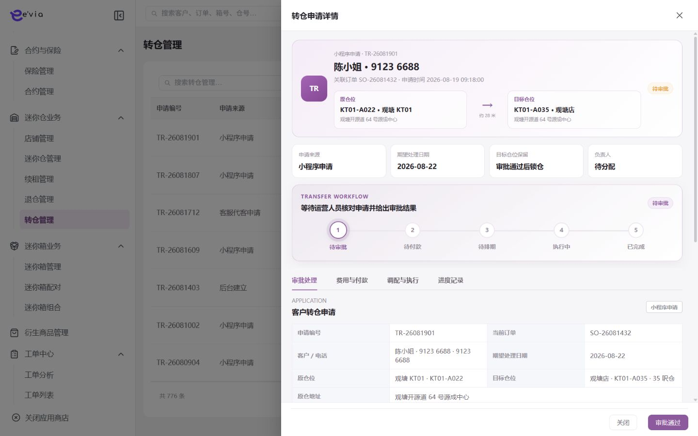

转仓管理 PRD
下载 Word 文档转仓管理 PRD
运营后台研发详细需求规格 · V2.3 · 2026-09-09
1 文档目标与范围
管理原仓位至目标仓位的选位、差价、按金、合同和交接。 本文档明确页面字段、操作流程、业务规则、跨端契约、权限和验收条件。
| 属性 | 内容 |
|---|---|
| 文档编号 | OS-OPS-PRD-16 |
| 产品基线 | AiwaBot产品原型 V3.2 与 OneStorage运营后台原型 V1.1 |
| 版本 | V2.3 2026-09-09 |
1.1 原型界面依据
本模块界面直接取自 AiwaBot产品原型-v3.2.html。真实截图及功能点对应说明见“界面与功能对应说明”。
2 界面与页面结构
2.1 界面与功能对应说明
以下真实原型截图用于确定页面区域、入口和交互位置；字段校验、状态变化和服务端处理以本PRD功能规格为准。

| 说明项 | 界面辅助说明 |
|---|---|
| 对应功能点 | OS-OPS-PRD-16-FP02 计算差价 |
| 页面区域 | 转仓管理列表与处理入口由查询条件、结果列表、状态标识、行级操作和分页区组成。 |
| 交互要求 | 查询条件可组合、重置并在返回时保留；列表与导出共用同一数据范围；按钮依据权限、状态和allowedActions显示。 |
| 状态与权限 | 动作由allowedActions控制；无权限隐藏入口，接口仍执行403校验并记录审计。 |

| 说明项 | 界面辅助说明 |
|---|---|
| 对应功能点 | OS-OPS-PRD-16-FP01 新增转仓；OS-OPS-PRD-16-FP03 生成新订单 |
| 页面区域 | 新增界面按业务分组展示表单字段、关联对象选择、保存与取消操作。 |
| 交互要求 | 必填和格式错误在字段下方提示；关联对象实时校验；保存期间按钮防重复，关闭已修改表单需二次确认。 |
| 状态与权限 | 动作由allowedActions控制；无权限隐藏入口，接口仍执行403校验并记录审计。 |

| 说明项 | 界面辅助说明 |
|---|---|
| 对应功能点 | OS-OPS-PRD-16-FP04 完成交接；OS-OPS-PRD-16-FP05 取消 |
| 页面区域 | 处理界面展示对象摘要、当前状态、流程节点、执行字段、处理记录以及下一步动作。 |
| 交互要求 | 动作只在当前状态允许时可用；提交时携带expectedVersion，成功后回源刷新状态、时间线、SLA和allowedActions。 |
| 状态与权限 | 动作由allowedActions控制；无权限隐藏入口，接口仍执行403校验并记录审计。 |
2.3 筛选条件
| 筛选项 | 规则 |
|---|---|
| 转仓编号、客户、旧仓或新仓 | 支持组合查询、重置和返回保留。 |
| 店铺 | 支持组合查询、重置和返回保留。 |
| 转仓日期 | 支持组合查询、重置和返回保留。 |
| 处理状态 | 支持组合查询、重置和返回保留。 |
| 负责人 | 支持组合查询、重置和返回保留。 |
3 列表字段规格
>| 字段ID | 字段 | 来源 | 展示与交互规则 |
|---|---|---|---|
| OS-OPS-PRD-16-L01 | 转仓编号 | 服务端主键或业务编号 | 完整展示并支持复制；唯一且不可使用展示名称代替。 |
| OS-OPS-PRD-16-L02 | 旧仓发票 | 业务主域 | 详情与导出保持一致；空值显示—，不使用模拟值补齐。 |
| OS-OPS-PRD-16-L03 | 仓由 | 业务主域 | 详情与导出保持一致；空值显示—，不使用模拟值补齐。 |
| OS-OPS-PRD-16-L04 | 仓至 | 业务主域 | 详情与导出保持一致；空值显示—，不使用模拟值补齐。 |
| OS-OPS-PRD-16-L05 | 转仓日期 | 服务端时间 | 按Asia/Hong_Kong显示；空值显示—，排序使用原始时间。 |
| OS-OPS-PRD-16-L06 | 新销售订单 | 业务主域 | 详情与导出保持一致；空值显示—，不使用模拟值补齐。 |
| OS-OPS-PRD-16-L07 | 旧单退租 | 业务主域 | 详情与导出保持一致；空值显示—，不使用模拟值补齐。 |
| OS-OPS-PRD-16-L08 | 产生新销售订单 | 业务主域 | 详情与导出保持一致；空值显示—，不使用模拟值补齐。 |
| OS-OPS-PRD-16-L09 | 备注 | 业务主域 | 详情与导出保持一致；空值显示—，不使用模拟值补齐。 |
| OS-OPS-PRD-16-L10 | 操作 | 服务端/关联主数据 | 根据allowedActions显示查看、编辑及状态动作；后端再次鉴权。 |
4 新增与编辑表单
| 字段ID | 字段 | 控件 | 必填 | 校验与保存规则 |
|---|---|---|---|---|
| OS-OPS-PRD-16-F01 | 原订单 | 文本框 | 条件必填 | 去除首尾空格；保存原始值与标准化值。 |
| OS-OPS-PRD-16-F02 | 客户 | 文本框 | 条件必填 | 去除首尾空格；保存原始值与标准化值。 |
| OS-OPS-PRD-16-F03 | 原仓位 | 文本框 | 条件必填 | 去除首尾空格；保存原始值与标准化值。 |
| OS-OPS-PRD-16-F04 | 目标店铺 | 单选或下拉选择 | 必填 | 选项来自服务端字典；提交编码值，界面显示名称。 |
| OS-OPS-PRD-16-F05 | 目标仓位 | 文本框 | 条件必填 | 去除首尾空格；保存原始值与标准化值。 |
| OS-OPS-PRD-16-F06 | 转仓日期 | 日期或日期时间 | 必填 | 服务端校验起止顺序、营业日和截止规则。 |
| OS-OPS-PRD-16-F07 | 差价计算方式 | 单选或下拉选择 | 必填 | 选项来自服务端字典；提交编码值，界面显示名称。 |
| OS-OPS-PRD-16-F08 | 租金差额 | 金额输入 | 条件必填 | 输入大于等于0，最多两位小数；服务端以最小货币单位重算。 |
| OS-OPS-PRD-16-F09 | 按金差额 | 金额输入 | 条件必填 | 输入大于等于0，最多两位小数；服务端以最小货币单位重算。 |
| OS-OPS-PRD-16-F10 | 新租期 | 数字输入 | 条件必填 | 仅允许业务配置范围内的整数；服务端再次校验。 |
| OS-OPS-PRD-16-F11 | 新销售订单 | 文本框 | 条件必填 | 去除首尾空格；保存原始值与标准化值。 |
| OS-OPS-PRD-16-F12 | 旧单退租 | 文本框 | 条件必填 | 去除首尾空格；保存原始值与标准化值。 |
| OS-OPS-PRD-16-F13 | 交接负责人 | 单选或下拉选择 | 必填 | 选项来自服务端字典；提交编码值，界面显示名称。 |
| OS-OPS-PRD-16-F14 | 备注 | 多行文本 | 条件必填 | 最多500字；拒绝或异常原因不得只输入空白。 |
5 功能点详细设计
| 功能编号 | 功能点 | 目标 |
|---|---|---|
| OS-OPS-PRD-16-FP01 | 新增转仓 | 校验原租约有效并实时锁定目标仓位。 |
| OS-OPS-PRD-16-FP02 | 计算差价 | 按生效日分摊旧租金、新租金和按金。 |
| OS-OPS-PRD-16-FP03 | 生成新订单 | 建立新SO并关联原订单和转仓单。 |
| OS-OPS-PRD-16-FP04 | 完成交接 | 确认原仓清空、目标仓启用和钥匙权限。 |
| OS-OPS-PRD-16-FP05 | 取消 | 释放目标仓并处理已支付差额。 |
5.1 新增转仓
功能编号：OS-OPS-PRD-16-FP01
功能目的：校验原租约有效并实时锁定目标仓位。
使用角色与入口：具备本模块创建权限的运营人员；从模块列表右上角新增入口或关联对象快捷入口进入。入口显示前校验菜单、动作和数据范围。
前置条件：用户登录有效并具备创建或批量权限；关联主数据有效且属于dataScope；页面已加载最新字典、业务配置和allowedActions。
界面操作：打开新增界面，按页面分组录入原订单、客户、原仓位、目标店铺、目标仓位、转仓日期、差价计算方式、租金差额、按金差额、新租期、新销售订单、旧单退租；关联对象使用检索选择。点击保存前完成字段级和跨字段校验。
系统处理：服务端使用clientRequestId幂等校验，在事务内生成业务编号、主对象、初始状态和审计记录；事务提交后发布领域事件。校验原租约有效并实时锁定目标仓位。
业务规则：目标仓必须可用且预留未过期；原仓与目标仓不能相同。服务端必须重复校验。
成功结果：页面提示“新增转仓成功”，刷新对象状态、version、allowedActions、关联对象和时间线；如产生异步任务，同时显示任务编号和进度入口。
异常与恢复：400保留输入；403拒绝并审计；409要求刷新；超时按clientRequestId查询；部分成功显示明细和补偿入口。
跨端影响：客户小程序选择可转仓租约并查看报价；接收端打开后重新鉴权并回源。
验收条件：在允许状态下完成新增转仓时仅产生一次预期数据变化和一次审计记录；越权、错误状态、重复提交及版本冲突均不得产生重复对象或越级状态。
5.2 计算差价
功能编号：OS-OPS-PRD-16-FP02
功能目的：按生效日分摊旧租金、新租金和按金。
使用角色与入口：当前对象负责人、被分派执行人或获授权管理员；从列表行操作、详情页主操作区或待办入口进入。入口显示前校验菜单、动作和数据范围。
前置条件：用户登录有效；目标对象存在且属于用户dataScope；当前状态包含该动作；页面持有最新version和allowedActions。涉及金额、库存、附件或第三方结果时必须回源确认。
界面操作：在详情页执行计算差价，填写或核对原订单、客户、目标店铺、转仓日期、新销售订单、交接负责人、备注、转仓编号、产生新销售订单；界面随步骤显示当前节点、下一步和可撤回条件。
系统处理：服务端调用POST /ops/v1/transfers/{id}/actions/{action}，校验权限、当前状态、expectedVersion和业务不变量，在事务中写入状态及时间线。按生效日分摊旧租金、新租金和按金。
业务规则：差价计算保存参数和结果快照。服务端必须重复校验。
成功结果：页面提示“计算差价成功”，刷新对象状态、version、allowedActions、关联对象和时间线；如产生异步任务，同时显示任务编号和进度入口。
异常与恢复：400保留输入；403拒绝并审计；409要求刷新；超时按clientRequestId查询；部分成功显示明细和补偿入口。
跨端影响：客户确认后完成新合同签署和差价支付；接收端打开后重新鉴权并回源。
验收条件：在允许状态下完成计算差价时仅产生一次预期数据变化和一次审计记录；越权、错误状态、重复提交及版本冲突均不得产生重复对象或越级状态。
5.3 生成新订单
功能编号：OS-OPS-PRD-16-FP03
功能目的：建立新SO并关联原订单和转仓单。
使用角色与入口：具备本模块创建权限的运营人员；从模块列表右上角新增入口或关联对象快捷入口进入。入口显示前校验菜单、动作和数据范围。
前置条件：用户登录有效并具备创建或批量权限；关联主数据有效且属于dataScope；页面已加载最新字典、业务配置和allowedActions。
界面操作：打开新增界面，按页面分组录入原订单、客户、原仓位、目标店铺、目标仓位、转仓日期、差价计算方式、租金差额、按金差额、新租期、新销售订单、旧单退租；关联对象使用检索选择。点击保存前完成字段级和跨字段校验。
系统处理：服务端使用clientRequestId幂等校验，在事务内生成业务编号、主对象、初始状态和审计记录；事务提交后发布领域事件。建立新SO并关联原订单和转仓单。
业务规则：目标仓必须可用且预留未过期；原仓与目标仓不能相同。服务端必须重复校验。
成功结果：页面提示“生成新订单成功”，刷新对象状态、version、allowedActions、关联对象和时间线；如产生异步任务，同时显示任务编号和进度入口。
异常与恢复：400保留输入；403拒绝并审计；409要求刷新；超时按clientRequestId查询；部分成功显示明细和补偿入口。
跨端影响：工单小程序接收搬仓和查仓任务；接收端打开后重新鉴权并回源。
验收条件：在允许状态下完成生成新订单时仅产生一次预期数据变化和一次审计记录；越权、错误状态、重复提交及版本冲突均不得产生重复对象或越级状态。
5.4 完成交接
功能编号：OS-OPS-PRD-16-FP04
功能目的：确认原仓清空、目标仓启用和钥匙权限。
使用角色与入口：当前对象负责人、被分派执行人或获授权管理员；从列表行操作、详情页主操作区或待办入口进入。入口显示前校验菜单、动作和数据范围。
前置条件：用户登录有效；目标对象存在且属于用户dataScope；当前状态包含该动作；页面持有最新version和allowedActions。涉及金额、库存、附件或第三方结果时必须回源确认。
界面操作：在详情页执行完成交接，填写或核对原订单、客户、目标店铺、转仓日期、新销售订单、交接负责人、备注、转仓编号、产生新销售订单；界面随步骤显示当前节点、下一步和可撤回条件。
系统处理：服务端调用POST /ops/v1/transfers/{id}/actions/{action}，校验权限、当前状态、expectedVersion和业务不变量，在事务中写入状态及时间线。确认原仓清空、目标仓启用和钥匙权限。
业务规则：完成时原仓转待清仓，目标仓转已租用。服务端必须重复校验。
成功结果：页面提示“完成交接成功”，刷新对象状态、version、allowedActions、关联对象和时间线；如产生异步任务，同时显示任务编号和进度入口。
异常与恢复：400保留输入；403拒绝并审计；409要求刷新；超时按clientRequestId查询；部分成功显示明细和补偿入口。
跨端影响：客户小程序选择可转仓租约并查看报价；接收端打开后重新鉴权并回源。
验收条件：在允许状态下完成完成交接时仅产生一次预期数据变化和一次审计记录；越权、错误状态、重复提交及版本冲突均不得产生重复对象或越级状态。
5.5 取消
功能编号：OS-OPS-PRD-16-FP05
功能目的：释放目标仓并处理已支付差额。
使用角色与入口：对象负责人或具备状态管理权限的管理员；从列表行操作或详情页状态动作区进入。入口显示前校验菜单、动作和数据范围。
前置条件：用户登录有效；目标对象存在且属于用户dataScope；当前状态包含该动作；页面持有最新version和allowedActions。涉及金额、库存、附件或第三方结果时必须回源确认。
界面操作：在详情或行操作中触发取消，界面展示当前状态、目标状态、影响范围和原因；高风险动作二次确认。
系统处理：服务端调用POST /ops/v1/transfers/{id}/actions/{action}，校验权限、当前状态、expectedVersion和业务不变量，在事务中写入状态及时间线。释放目标仓并处理已支付差额。
业务规则：目标仓必须可用且预留未过期；原仓与目标仓不能相同。服务端必须重复校验。
成功结果：页面提示“取消成功”，刷新对象状态、version、allowedActions、关联对象和时间线；如产生异步任务，同时显示任务编号和进度入口。
异常与恢复：400保留输入；403拒绝并审计；409要求刷新；超时按clientRequestId查询；部分成功显示明细和补偿入口。
跨端影响：客户确认后完成新合同签署和差价支付；接收端打开后重新鉴权并回源。
验收条件：在允许状态下完成取消时仅产生一次预期数据变化和一次审计记录；越权、错误状态、重复提交及版本冲突均不得产生重复对象或越级状态。
6 状态机与业务规则
| 对象 | 状态流转 |
|---|---|
| 转仓管理 | 已申请→目标仓预留→待报价确认→待签约付款→待交接→已完成；取消/异常 |
| 异步任务 | 待执行→执行中→成功/失败→重试/人工处理 |
| 规则ID | 业务规则 |
|---|---|
| OS-OPS-PRD-16-R01 | 目标仓必须可用且预留未过期 |
| OS-OPS-PRD-16-R02 | 原仓与目标仓不能相同 |
| OS-OPS-PRD-16-R03 | 差价计算保存参数和结果快照 |
| OS-OPS-PRD-16-R04 | 新合同生效前原合同保持有效 |
| OS-OPS-PRD-16-R05 | 完成时原仓转待清仓，目标仓转已租用 |
| OS-OPS-PRD-16-R06 | 所有写请求携带clientRequestId和expectedVersion，重复请求返回首次结果 |
| OS-OPS-PRD-16-R07 | 服务端返回allowedActions，前端仅据此展示按钮，后端仍逐动作鉴权 |
| OS-OPS-PRD-16-R08 | 列表、详情、关联选择器、统计和导出使用同一数据范围 |
| OS-OPS-PRD-16-R09 | 创建、编辑、状态流转、导出、下载和审批均记录操作审计 |
| OS-OPS-PRD-16-R10 | 第三方调用失败不得伪装主业务成功，进入可重试或人工处理状态 |
7 BPMN流程

客户、后台、执行端和领域服务节点必须与状态机一致。
8 跨端交互规则
| 规则ID | 交互规则 |
|---|---|
| OS-OPS-PRD-16-X01 | 客户小程序选择可转仓租约并查看报价 |
| OS-OPS-PRD-16-X02 | 客户确认后完成新合同签署和差价支付 |
| OS-OPS-PRD-16-X03 | 工单小程序接收搬仓和查仓任务 |
客户小程序仅访问本人数据，工单小程序仅访问本人或团队任务
深链打开后重新校验身份、权限和最新状态
金额、库存、状态和allowedActions必须回源
离线重试沿用同一clientRequestId
9 接口与事件契约
| 契约 | 路径或事件 | 要求 |
|---|---|---|
| 列表 | GET /ops/v1/transfers | 分页、排序、筛选、数据范围和脱敏 |
| 详情 | GET /ops/v1/transfers/{id} | version、关联对象、时间线和allowedActions |
| 新增 | POST /ops/v1/transfers | clientRequestId幂等 |
| 编辑 | PATCH /ops/v1/transfers/{id} | expectedVersion并发控制 |
| 动作 | POST /ops/v1/transfers/{id}/actions/{action} | 动作级权限和状态前置 |
| 事件 | 转仓管理.Changed.v1 | eventId、aggregateId、version和occurredAt |
10 异常与边界处理
| 场景 | 处理 |
|---|---|
| 400字段错误 | 字段级提示并保留输入 |
| 403无权限 | 拒绝并记录审计 |
| 404不存在 | 不泄露额外对象信息 |
| 409版本冲突 | 刷新后重新操作 |
| 重复请求 | 返回首次幂等结果 |
| 第三方失败 | 进入重试或人工处理 |
11 验收标准
| 验收ID | 验收条件 |
|---|---|
| OS-OPS-PRD-16-AC01 | 列表字段、筛选、分页、排序和导出一致 |
| OS-OPS-PRD-16-AC02 | 表单字段、必填和跨字段校验完整 |
| OS-OPS-PRD-16-AC03 | 所有动作同时校验权限、数据范围和状态 |
| OS-OPS-PRD-16-AC04 | 重复请求无重复记录或副作用 |
| OS-OPS-PRD-16-AC05 | 跨端编号、状态、金额和时间一致 |
| OS-OPS-PRD-16-AC06 | 异常和空数据有明确反馈 |
| OS-OPS-PRD-16-AC07 | 敏感字段按权限脱敏并审计 |
| OS-OPS-PRD-16-AC08 | P0规则具有自动化测试 |